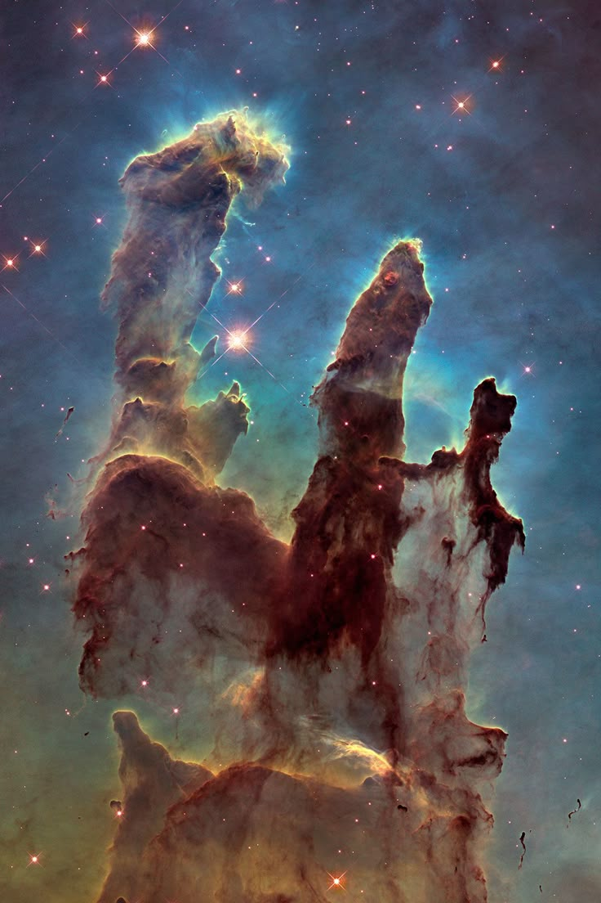

Supernova
Estrelas massivas explodem como supernovas, lançando matéria e energia pelo espaço à velocidades altíssimas, dando origem a novas estrelas e planetas.
De nuvens de gás e poeira cósmica surgem as mais brilhantes luzes do universo.

Nebulosas são os "berçários" do universo, onde novas estrelas nascem.As estrelas formam-se pela condensação de gases que se aglutinám pela atração gravitacional. As grandes nebulosas são "berçários" de estrelas.
Por até 10 milhões de anos protoestrelas são compactadas por suas próprias gravidades até que a pressão e temperatura sejam suficientes para a fusão nuclear.
Quando os átomos de hidrogênio começam à se fundir, produzindo hélio, a estrela entra na sequência principal — 90% de todas as estrelas do Universo estão nesta fase.
Plasma superaquecido composto principalmente de hidrogênio e hélio.
A maioria das estrelas (0.5MO a 2.5MO) são compostas de hélio e hidrogênio, os elementos mais abundantes do Universo.
Estrelas extraem energia fundindo átomos de hidrogênio em hélio. Esse processo libera quantidades imensas de energia.
Estrelas supergigantes (8MO a 10MO) formam elementos mais pesados que o hélio em seu interior, como carbono e oxigênio.
O Sol é uma anã amarela, uma estrela de sequência principal que consume menos de 0.01% de sua massa anualmente. Dêsde que se tornou uma estrela de sequência principal, há 4.6 bilhões de anos, seu brilho aumentou mais de 40%.
O destino de uma estrela é determinado pela sua massa — desde anãs silenciosas até explosões cataclísmicas.
Resfriam-se lentamente após consumir o hidrogênio, tornando-se ãns brancas de hélio. Seu tempo de vida é maior que o do próprio Universo.
Formam carbono e oxigênio no núcleo. Expandem-se como gigantes e expelem camadas exteriores, formando nebulosas planetárias.
Evolução parecida com estrelas pouco massivas. Após expansão, deixam abertas o núcleo, originando estrelas ãns.
Expandem-se como supergigantes, fundem elementos pesados e explodem como supernovas, lançando matéria pelo espaço.